술을 먹고 잠들어서인지 갈증이 너무 심하다. 밖으로 나가 마트로 향하는데
과일가게에서 오렌지주스를 판다. 나는 갈증을 얼른 해결하려고 그냥
오렌지주스를 먹었다. 근데 웬열, 엄청 급하게 꿀꺽꿀꺽 마셨는데 양이
그대로다. 나는 계속되는 갈증에 오렌지주스를 배가 터지도록 먹었지만
다시 채워지는 신기한 오렌지주스였다.

우리 집 고양이 보리가 장난감 공을 가지고 놀다가 장농 아래로
넣었다. 나는 그 공을 꺼내주려고 몸을 접어서 팔을 장농 아래로 넣는
순간 몸이 움직이질 않았다. ‘아니 왜 몸이 움직이질 않지..?’ 라고
생각하며 몸을 막 움직여봤지만 미동도 하지 않았다. ‘아, 나 지금
가위눌린건가’ 하고 뭔가에 짓눌린 느낌을 받은 나는 등을 살펴봤고
등에는 장농에 공을 집어넣은 보리가 앉아있었다.
어느 때와 다를 것 없이 평범한 낮이였다. 북한이 미사일 시험발사로
전 세계가 머리아파하고 있던 때였다. 게다가 우리 나라로 미사일을
쏜다면 가장 먼저 내가 사는 곳 ‘평택’을 쏴버린댄다. 참내, 그런다고
내가 쫄줄 아ㄴ..? 저건 뭐지? 우리 집 바로 앞에 핵폭탄이 떨어졌다.
땅이 울린다. 엄청난 굉음이 내 귀를 찢을 듯이 울린다. 눈 앞이 전부
시뻘게졌다. 세상이 사라졌다. (이 꿈이 내가 요 근래 꿨던 꿈중 가장
선명하고 무서운 꿈이였다. 실제로 몇 주간 잠을 설쳤다.)
 

학교 캠퍼스라고 생각한 낯선 장소에서 버스정류장을 향해 걸어가는
중이다. 햇빛이 강한 여름이였다. 내가 좋아하는 thisisneverthat
티셔츠를 입고 걸어가는 중이였다. 정류장에는 두명의 흑인이 있었고
그 사람들도 나와 똑같은 브랜드의 옷을 입고있었다. 두명의
흑인은 날 보더니 “ (한국말로) yo~ man~! 네버뎃 티셔츠 입었네
man~!” 이라고 하며 스웩있게 껴안았다.
뉴스에서 엄청나게 큰 슈퍼문이 롯데월드에 뜬다는 소식을 들었다.
남자친구와 나는 슈퍼문을 보기위해 엄청나게 긴 육교를 넘어서
롯데월드를 향해 달려가고 있었다. 마침내 롯데월드에 도착했고
우리는 매우 설렌 마음으로 슈퍼문을 기다렸다. 근데 갑자기 낮이
되버리고 슈퍼문은 뜨지 않았다. 대신 대낮의 하늘에 엄청나게 많은
별들이 떠있었다. 별들이 엄청 이뻤다.
우리 집에는 두마리의 고양이가 있다, 보리랑 타코다(이건 실제).
우리는 집이 없는 고양이들을 임시보호해주고 있었다. 내가 외출을
하고 온 사이에 갑자기 엄마가 고양이들을 다 보호소에 보냈다고
했다.근데 문제는 원래 키우던 보리까지 보내버렸다는 것이다.
난 그 소리를 듣고 엄마한테 어떡하냐고했지만 엄마는 태연하게
어쩔 수 없다했고 나는 펑펑 울면서 잠에서 깼다.
김수인
tndls0103@naver.com
https://www.instagram.com/kim_______50/
이 페이지는 과제용 페이지입니다.